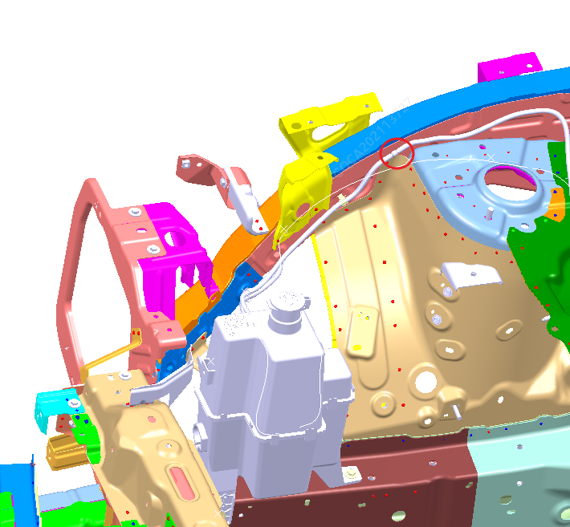
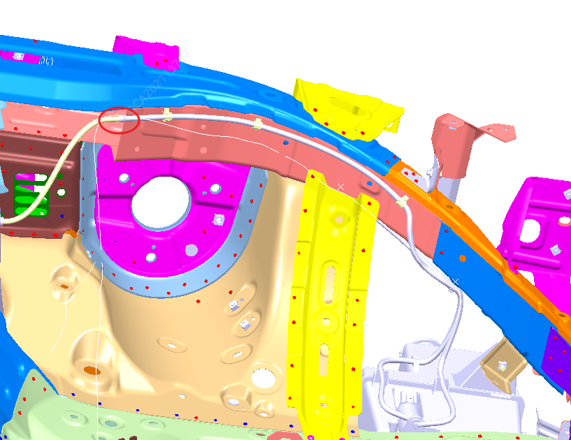
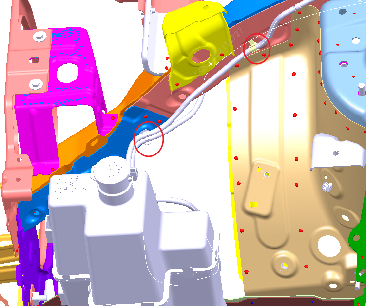
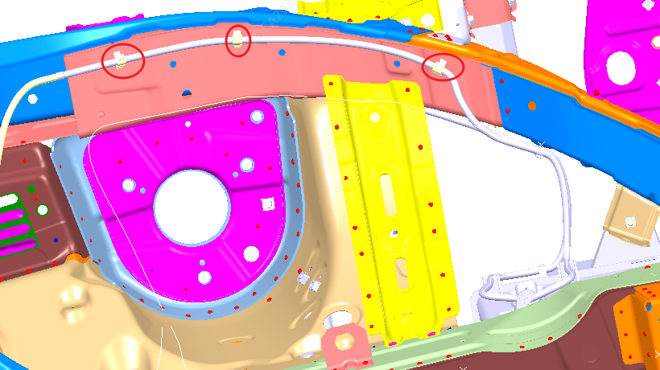
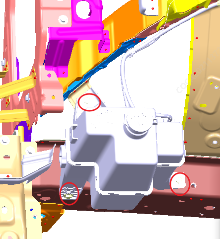

1. Демонтировать облицовку моторного отсека, см. Снятие и установка подкрылков
2. Снять и установить передний бампер, см. Снятие и установка переднего бампера
3. Демонтировать подкрылок, см. Снятие и установка подкрылков
4. Отсоединить шланг на бачке от двухходовых штуцеров переднего и заднего шлангов


5. 5 фиксаторов переднего и заднего шлангов бачка омывателя на кузове автомобиля


6. С помощью инструмента T30 демонтировать 3 точки крепления бачка стеклоомывателя

7. Порядок установки обратен порядку снятия